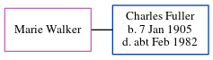

Marie Edith Fuller (née Walker)
[ Home ] | [ Calendar ] | [ Surnames Index ] | [ Census Index ] | [ Family History ]Marie Walker, the wife of Charles Thomas Fuller (the second cousin once-removed on the father's side of Nigel Horne), and married Charles (a general laborer) in Thanet, Kent, England around Nov 19241.
Citations
- England & Wales marriages 1837-2008 - Findmypast
Media
England & Wales marriages 1837-2008 - BMD/M/1924/4/AZ/001236/073
Family Tree
Generated by ged2site. Last updated on Jun 11, 2024